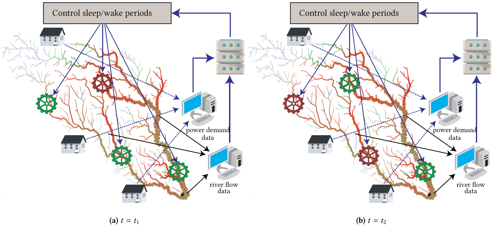

|  |
Uncertainty in either the structure of complex interdependent networks or their coupling with the environment makes the resource allocation problems challenging. For instance, run-of-the-river (ROR) hydrokinetic power plants aim to overcome the catastrophic ecological impact of large dam-based hydroelectric power generation projects and minimize the risk of large area flooding. The ROR power plants harvest the kinetic energy within a river at relatively small, local scales at multiple places along the river basin, but do not significantly impact the water flow and damage the ecosystem. However, the ROR power generation profile and efficiency is critically affected by uncertainty in generated output due to strong weather and climate inter-dependence. In addition, the power demand is spatially and temporaly distributed with complex dynamics that raises the question to how optimally place and manage the ROR hydrokinetic power plants within a large river basin area. Ad-hoc distribution or ROR allocation based on static large-scale analysis of a river basin cannot cope with highly variable changes in the weather, climate (e.g., catastrophic levels of wind, precipitation, extreme temperatures/droughts) and power demand making the instantaneous identified solution obsolete to apply at run-time. Similar challenges caused by various sources of uncertainty affect the wind and solar power generation.
To provide a climate-aware and sustainable power/energy generation methodology, we formulate a general problem of resource distribution (allocation) which is dependent on various levels of uncertainty coming either from cyber-physical system operation or from the environment. We particularize this problem to the (ROR) distribution across a large river basin subject to uncertainties in the river flow while considering infrastructure and cyber (communication) constraints. Our methodology aims to place the RORs across the large river basin such that the difference between the probability distribution of the power demand and that of generated power is minimized subject to infrastructure constraints. A probabilistic clustering approach is used to partition the geographic space. The uncertainty in the environment (river) is split into 2 parts, short-term and long-term. For short-term, a novel ‘disturb and settle’ algorithm is employed to determine the placement of RORs. For long-term a closed loop is designed as shown in the above figure to decide the sleep/wake periods of the ROR units. The real water-flow data of Mississippi river is used to study the performance of the proposed formulation and algorithm.